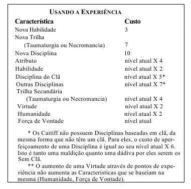

Passo 1°:Conceito
"Mestre!!! Mas eu quero distribuir meus pontos antes de fazer a historia...CALMA PEQUENO CAFONHOTO, é muito importante você pensar na historia e no conceito do personagem antes."
Se você é um combeiro por natureza pode ser muito dificíl para você esta primeira parte
porém, vamos apenas relaxar e esquecer os "combos". Bom o conceito
é subjetivo e não tem qualquer efeito na mecanica do jogo.Sua função é basicamente permitir que você formule uma personalidade para o seu personagem, dando uma faísca para incendiar sua imaginação e fornecer base para um vampiro que deseja preservar a sua Humanidade ou trilhar contra ela.
Você pode ou (NÃO com exceção do clã) Comportamento,Natureza e Clã.
Responder algumas perguntas pode lhe ajudar a decidir: Qual ofício ele exercia? Como ele se via diante da sociedade mortal? O que lhe tornava especial? Muitos vampiros se apegam nas suas ultimas fagulhas mortais para ajudar a manter sua humanidade, facilitando a se relacionar com o mundo a sua volta.
O COMPORTAMENTO nada mais é do que a “máscara” usada pelo personagem para esconder o seu “EU” interior. Você pode escolher uma (ou não) Natureza que difere do seu Comportamento.
A NATUREZA é aquilo que seu personagem realmente é em sua consciência, seu verdadeiro “EU”. Claro que não é o único aspecto de sua personalidade, mas o mais dominante.
Passo 2°:Clãs e Disciplinas
"Agora sim é a parte que todos gostamos."
O clã é aquela familia que lhe "abraçou", que transformou você
em uma criatura da noite. Cada clã vem com suas diciplinas.Existem 13
clãs no Vampiro 3.5, mas dependendo do mestre, podem haver muitas outras.
Você pode comprar as outras diciplinas ao decorrer da mesa, ou se tiver os pontos
suficientes para compra após a criação do personagem, fale com seu mestre.
PONTOS PARA DISTRIBUIÇÃO NAS DICIPLINAS: 3.
Passo 3°:Atributos
Temos 3 categorias de atributos que representam o potencial básico de cada pessoa no mundo, são eles: Físicos (Força, Destreza, Vigor), Sociais (Carisma, Manipulação, Aparência) e Mentais (Percepção, Inteligência, Raciocínio). Todos já começam com 1 ponto em cada um desses atributos, com exceção do clã Nosferatu que são aberrações e tem aparência 0 e nada pode mudar isso.
VOCÊ TEM 7/5/3 PONTOS PARA DISTRIBUIR
Passo 4°:Habilidades
As habilidades são as perícias que você escolheu desenvolver durante sua vida. Basicamente é onde você decidiu lapidar seu potencial bruto dos atributos. Muito do que você escolheu no seu Conceito pode aparecer aqui, por exemplo: Se você era um cantor, provavelmente terá bons pontos em “performance”, se você era um investidor, provavelmente terá bastante ponto em “Finanças” e por ai vai.
VOCE TERÁ 13/9/5 PONTOS PARA DISTRIBUIR.
Passo 5°: Qualidades e Defeitos
Os Defeitos e Qualidades só podem ser escolhidos durante a fase de criação do personagem e são comprados com os pontos de bônus. Contudo o narrador tem liberdade de dar qualidades e defeitos no decorrer da crônica.
Passo 6°:Antecedentes
Os Antecedentes são características externas e não internas, e você deve sempre refletir sobre como as adquiriu, assim como o que elas representam. Quais são seus contatos? Por que seus Aliados o apoiam? Como exatamente você ganhou dinheiro suficiente para justificar seus quatro pontos em recursos? Se você detalhar bastante a concepção do seu personagem, a escolha dos Antecedentes apropriados deve ser natural.
VOCE TEM 5 PONTOS INCIAIS PARA DISTRIBUIÇÃO
Passo 7°: Virtudes
Cada personagem começa com um ponto em Coragem, Consciência e Autocontrole. Estas Virtudes têm um papel fundamental para determinar a Humanidade e os níveis de Força de Vontade, então seja cuidadoso em como você gasta os pontos.
VOCÊ TEM 7 PONTOS PARA DISTRIBUIR
Passo 9°: Pontos Bônus
"Então meu caro GAFANHOTO, vamos ao shoping?"
Você tem 15 pontos adicionais para comprar na loja do tio das trevas, e talvez se você der uma chorada para seu mestre, talvez ele te de mais pontinhos(Se o conceito do teu personagem for bem feitinho, você tem mais chances de sucesso hahahah...)
VOCÊ TEM 15 PONTOS PARA COMPRAR NA LOJINHA
Lojinha do Tio Das Trevas
Passo 10°: Finalização
"Não foi tão dificíl foi?"
Para finalizar precisamos somar o valor de humanidade e força de vontade.
Humanidade
O nível de humanidade inicial de um personagem é igual à soma de suas Características, Consciência e Autocontrole, resultando em uma pontuação que varia entre 5 e 10. Os jogadores também são encorajados a aumentar sua pontuação de Humanidade com pontos de bônus, pois um nível muito baixo indica que a Besta se encontra intimamente próxima.
Força De Vontade
O nível de força de vontade (FDV) inicial de um personagem é igual à sua pontuação de Coragem, portanto, varia entre 1 e 5. Os jogadores são encorajados a aumentar, sua pontuação inicial de FDV com pontos de bônus, pois esta característica é critica para se lidar com as perigosas situações emocionais dos Membros. A força de vontade também é usada para resistir ao frenesi, submeter-se a tarefas especialmente intimidantes e aumentar o efeito de certas Disciplinas.